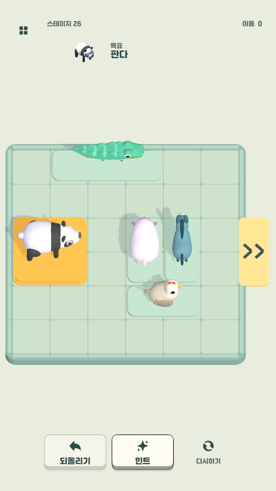
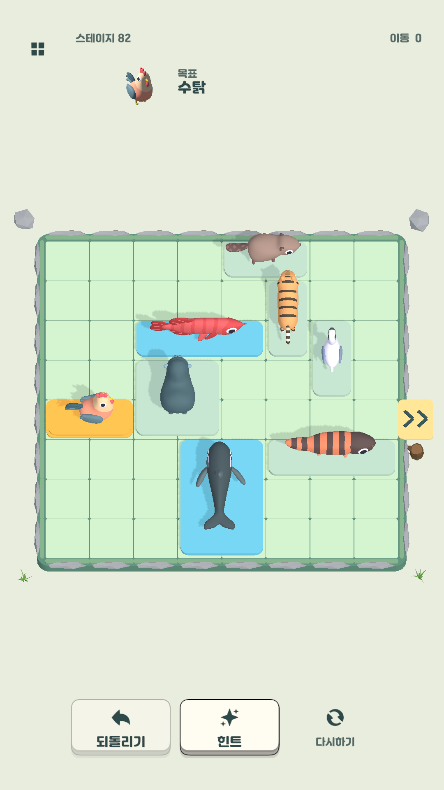
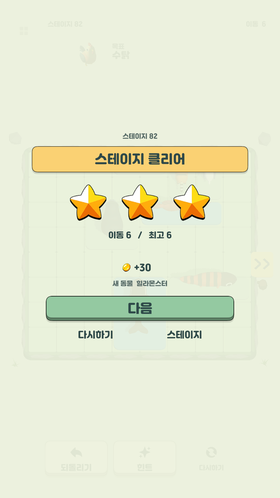

Animal Escape동물 탈출 퍼즐
판다가 나갈 길을
만들어 주세요.
출구는 오른쪽인데, 다른 동물들이 앞을 막고 있어요. 하나씩 밀어서 판다가 지나갈 공간을 만들어 주세요.
Android · 무료 · 광고 포함

동물을 밀고,
빈칸을 만들고,
금색 칸의 동물을 출구로.
동물을 누른 채 움직이면 돼요. 긴 동물은 놓인 방향을 따라 움직이고, 작은 동물은 가로와 세로로 이동할 수 있어요.
목표 동물을 출구까지 밀면 스스로 빠져나갑니다. 시간 제한은 없으니, 앞을 막은 동물부터 천천히 살펴보세요.
한 수가 아쉬우면 되돌리기. 막혔을 때는 다음 움직임을 알려주는 힌트도 있어요.
이렇게 플레이합니다.
게임 화면




악어는 옆으로,
작은 동물은 가로세로.
길게 누운 악어는 옆으로, 넓은 몸집의 동물은 넉넉한 공간으로. 동물의 모양을 보고 이동 순서를 생각해야 해요.
한 번 풀었다면 더 적게 움직여서 다시 도전해 보세요. 가장 잘 푼 기록은 별과 함께 남아요.
300개의 스테이지에 30종의 동물이 등장합니다. 만난 동물은 도감에 기록되고, 모은 코인으로 보드 테마도 바꿀 수 있어요.
KangJung이 만든 게임입니다.
Animal Escape는 Google Play에서 무료로 받을 수 있습니다. 플레이하다 궁금한 점이나 문제를 발견하면 메일로 알려 주세요.
개발자에게 문의하기 ↗